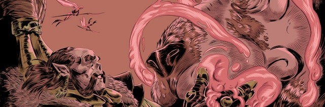

AKREP MOTİFİ
Anadolu dokumalarında "kötülüğü kendinden uzak tutma" işlevi gören bir tılsım gibidir.
GÜÇ VE KORUNMA
BUKAĞI MOTİFİ
Evliliğin kalıcılığını ve aile bağlarının kopmazlığını simgelemek için kullanılır.
SADAKAT VE BİRLİKTELİK
ÇENGEL MOTİFİ
Nazara karşı koruyucu bir kalkan oluşturmak ve şansı içeriye hapsetmek içindir.
KORUNMA VE KISMET
DAMGA MOTİFİ
Türk boylarının aidiyetlerini belirtmek için kullandıkları en temel işaretlerdir.
AİDİYET VE KİMLİK
EL-PARMAK-TARAK
Bereketin kaçmamasını sağlamak ve kötülüklerden temizlenmek için kullanılır.
BEREKET VE KORUMA
ELİBELİNDE
Türk dokuma sanatında dişiliği, anneliği ve doğurganlığı temsil eden figürdür.
ANALIK VE BEREKET
GÖZ MOTİFİ
Negatif enerjiye karşı ayna görevi görür. Kem gözün etkisini kırmak içindir.
NAZARDAN KORUNMA
HAYAT AĞACI
Sonsuz yaşam inancını ve soyun devamlılığını kutsamak amacıyla kullanılır.
SONSUZLUK
KOÇ BOYNUZU
Gücün, kararlılığın ve kahramanlığın en somut görselleşmiş halidir.
GÜÇ VE KUVVET
KURT İZİ MOTİFİ
Doğanın sert koşullarına karşı bir duruşu temsil eder. Bozkurt figürüne dayanır.
AİLE KORUMASI
KUŞ MOTİFİ
Ruhların taşıyıcısı ve gökyüzünün temsilcisi olarak görülürler.
HABER VE SEVGİ
PITRAK MOTİFİ
Bolluğun ve bereketin mekana yapışıp kalması anlamını taşır.
BEREKET
SAÇ BAĞI MOTİFİ
Kadının gücünü, onurunu ve gelecek hayallerini temsil eder.
MUTLULUK İSTEĞİ
SANDIKLI MOTİFİ
Çeyiz sandığının geometrik ifadesidir. Mahremiyeti ve değerleri korumayı yansıtır.
MAHREMİYET
YILDIZ MOTİFİ
Mutluluk, manevi derinlik ve ışık getirmesi için dokunur.
MUTLULUK VE IŞIK